Model Examples Distributed with the Model Release¶
The example problems released with the code are listed below. Each example is described in detail in this chapter.
- Columbia Slough Estuary (Excel control file)
- DeGray Reservoir (Excel control file) with sediment diagenesis and vertical algae migration
- Detroit Reservoir
- Long Lake (Excel control file)
- Multiple Water Body Cascade
- Particle Tracking
- Sediment Diagenesis Example
- Spokane River (both old input format and CSV input format)
- SysTDG Columbia River (Bonneville Reservoir)
Two additional sets of examples are also released with the model download: one for the United States Geological Survey (USGS) Auto Port Selection feature and one for using W2Post for plotting calibration profiles. The USGS Auto Port Selection examples are in the directory USGS Examples for using USGS Auto Port Selection Algorithm and include examples described in the README.txt file provided by Stewart Rounds of the USGS.
The W2Post example is included in the download directory W2tools post-processor integrated with W2control preprocessor. This includes the DeGray Reservoir example with computed temperature calibration data and statistics.
Columbia Slough Estuary¶
Waterbody Description¶
The Upper and Lower Columbia Slough are each long (about 9 miles) and narrow (50--200 ft wide) water bodies in the Portland metropolitan area in Multnomah County, Oregon. The Lower Columbia Slough is connected to the Willamette River near its mouth with the Columbia River, where it experiences a tidal fluctuation of its water surface between 1 and 3 ft.
Inflows to the Lower Columbia Slough include:
- Combined sewer overflows (CSOs)
- Stormwater from stormwater pipes and pump stations on the northern side of the Lower Slough
- Water from Smith and Bybee Lakes
- Leachate from St. John's Landfill
- Pumped and gravity inflows from the Upper Columbia Slough at Multnomah County Drainage District #1 (MCDD1)
The example problem is set up as a 2-branch model of the Lower Columbia Slough.
The Upper Columbia Slough, termed the "Middle" and "Upper" Slough, was historically maintained to provide irrigation water to agricultural and commercial users in the summer months. The Upper Slough is connected by pipes and an overflow weir during the fall, winter, and spring to Fairview Lake. During the summer, Fairview Lake is connected to the Upper Slough only by flow over and leakage through the weir.
Water is also pumped from the Upper Slough to the Lower Columbia Slough at a pump station at MCDD1 and from the Upper Slough to the Columbia River at MCDD4 (Multnomah County Drainage District #4). At MCDD1, pipes also allow gravity flow from the Upper Slough to the Lower Slough. Other inflows to the Upper Columbia Slough include groundwater and stormwater from the Portland International Airport and other industrial, commercial, and residential neighborhoods in the area.
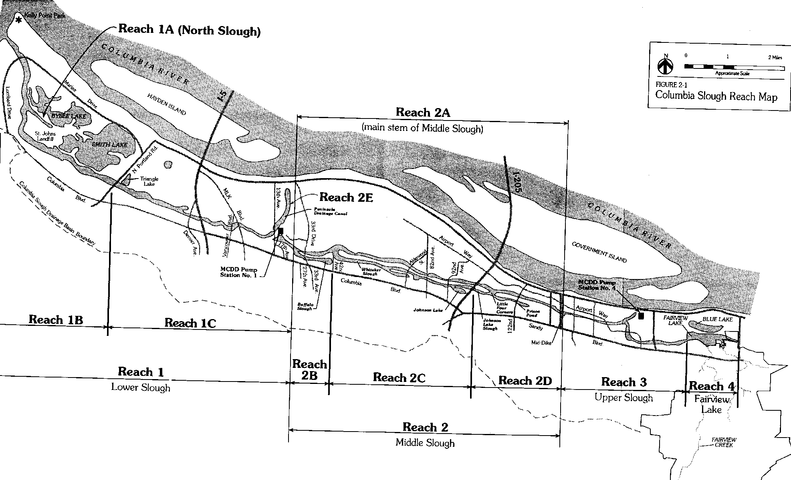
Model Grid¶
The model has 2 branches comprising the main arm of the Lower Slough and the branch named North Slough. The vertical grid spacing is 0.305--0.61 m (1--2 ft). Details of the bathymetry are shown in Table 1.
Table 1. Model branch characteristics for the Columbia Slough model.
| Branch | Length (ft) | Length (m) | Segment spacing (ft) | Segment spacing (m) | Number of segments | Segment number upstream end | Segment number downstream end |
|---|---|---|---|---|---|---|---|
| 1 (Lower Slough) | 43640 | 13302 | 502--1003 | 152.9--305.8 | 44 | 2 | 45 |
| 2 (North Slough) | 4503 | 1373 | 1500 | 457.5 | 3 | 48 | 50 |
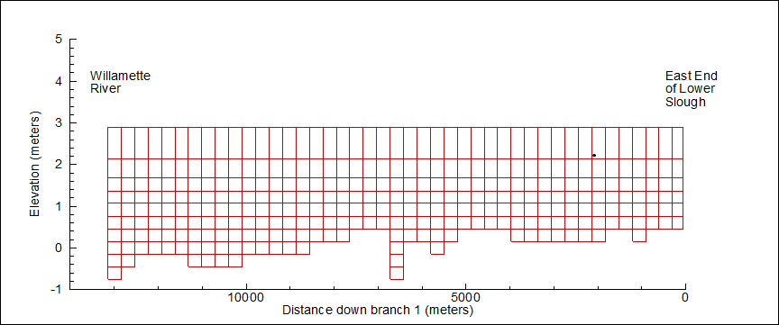
Tributary Inputs¶
The model has 17 tributary inputs (CSOs and storm water inputs) and 1 upstream flow input from the Upper Slough. Cell numbers of storm water inflows, CSOs, and the Upper Slough are shown in Table 2. Cell 45 is a head boundary condition, and the model calculates the flow rate in and out of the Slough based on head elevations.
Table 2. Point source tributary inflows to the Lower Columbia Slough model.
| ID | Internal trib # | Inflow branch | Inflow cell # | Outfall location | Flow file | Temp. file | Conc. file |
|---|---|---|---|---|---|---|---|
| 13th Street, CSO# 65, 64 | 1 | 1 | 3 | 755' downstream from ELS | Qtr_tr1.npt |
Ttr_tr1.npt |
Ctr_tr1.npt |
| PENN. P2-2 | 2 | 1 | 4 | 2433' downstream from ELS | Qtr_tr2.npt |
Ttr_tr2.npt |
Ctr_tr2.npt |
| Vancouver, CSO# 63 | 3 | 1 | 8 | 5814' downstream from ELS | Qtr_tr3.npt |
Ttr_tr3.npt |
Ctr_tr3.npt |
| Albina, CSO# 62 | 4 | 1 | 9 | 7098' downstream from ELS | Qtr_tr4.npt |
Ttr_tr4.npt |
Ctr_tr4.npt |
| PENN. P2-1 | 5 | 1 | 12 | 9723' downstream from ELS | Qtr_tr5.npt |
Ttr_tr5.npt |
Ctr_tr5.npt |
| Fenwick, CSO# 61 | 6 | 1 | 12 | 10290' downstream from ELS | Qtr_tr6.npt |
Ttr_tr6.npt |
Ctr_tr6.npt |
| Kenton, CSO #60 | 7 | 1 | 14 | 12448' downstream from ELS | Qtr_tr7.npt |
Ttr_tr7.npt |
Ctr_tr7.npt |
| Bayard, CSO #59 | 8 | 1 | 17 | 14998' downstream from ELS | Qtr_tr8.npt |
Ttr_tr8.npt |
Ctr_tr8.npt |
| PENN P1-1 | 9 | 1 | 18 | 16328' downstream from ELS | Qtr_tr9.npt |
Ttr_tr9.npt |
Ctr_tr9.npt |
| Chautauqua, CSO #58 | 10 | 1 | 19 | 17491' downstream from ELS | Qtr_tr10.npt |
Ttr_tr10.npt |
Ctr_tr10.npt |
| Fiske, CSO #57 | 11 | 1 | 22 | 19777' downstream from ELS | Qtr_tr11.npt |
Ttr_tr11.npt |
Ctr_tr11.npt |
| Oregonian, CSO #56 | 12 | 1 | 26 | 24389' downstream from ELS | Qtr_tr12.npt |
Ttr_tr12.npt |
Ctr_tr12.npt |
| Oswego, CSO #55, 55A, 54A | 13 | 1 | 29 | 27577' downstream from ELS | Qtr_tr13.npt |
Ttr_tr13.npt |
Ctr_tr13.npt |
| RG-1 | 14 | 1 | 33 | 31450' downstream from ELS | Qtr_tr14.npt |
Ttr_tr14.npt |
Ctr_tr14.npt |
| St. Johns, CSO #54 | 15 | 1 | 33 | 30924' downstream from ELS | Qtr_tr15.npt |
Ttr_tr15.npt |
Ctr_tr15.npt |
| RG-2 | 16 | 1 | 37 | 35212' downstream from ELS | Qtr_tr16.npt |
Ttr_tr16.npt |
Ctr_tr16.npt |
| RG-3 | 17 | 1 | 45 | 43076' downstream from ELS | Qtr_tr17.npt |
Ttr_tr17.npt |
Ctr_tr17.npt |
Note
ELS = East end of Lower Slough.
Key Features¶
This example demonstrates how to use an external head boundary condition and set up files for that boundary. This is an older example using the old input format for head boundary conditions. The User Manual Part 3 shows how these files can be developed in a simpler format, especially if there is no stratification in the Willamette River at the external head boundary condition location.
The model uses the file tdh_br1.npt for the temperature downstream head external boundary condition. An updated, simpler format file is also included in this example, tdh_br1.csv. A similar CSV file could be developed for the cdh_br1.npt file following guidelines in the User Manual Part 3. The control file for this example is generated from the Excel file w2_con_ColSlough.xlsm, which produces the file w2_con.csv.
DeGray Reservoir with Sediment Diagenesis and Vertical Algae Migration¶
Waterbody Description¶
DeGray Reservoir is located on the Caddo River in south-central Arkansas and is the site of the first water quality test application of CE-QUAL-W2. Impounded in 1969, the reservoir is used for power generation, flood control, and recreation. DeGray is classified as a monomictic, deep storage reservoir.
This example demonstrates several features of the CE-QUAL-W2 model, including:
- Sediment diagenesis
- Vertical migration of algae
- Contour plotting for temperature
- Environmental performance
- Fish habitat
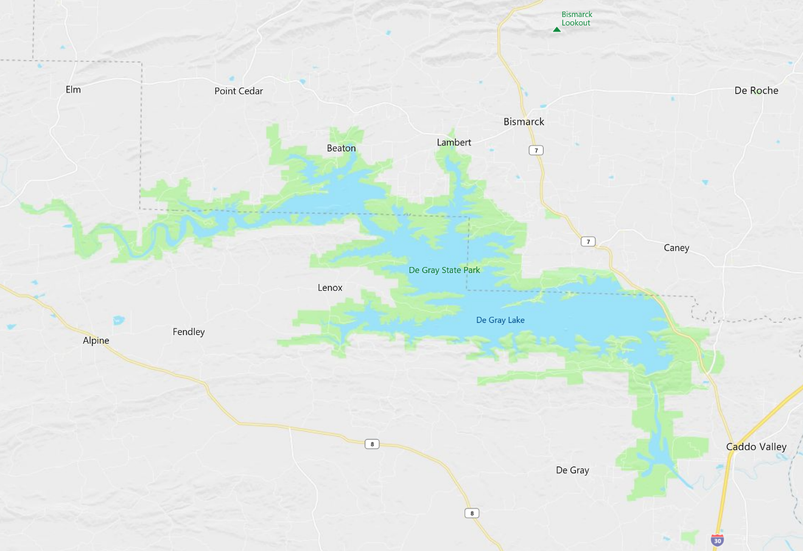
Table 3. DeGray Reservoir physical characteristics.
| Area | Volume | Average depth | Maximum depth | Residence time |
|---|---|---|---|---|
| 5,092 ha | 613,692 acre-ft | 14.9 m | 56 m | 560 days |
Model Grid¶
DeGray Reservoir was originally modeled as a one-branch system with no tributary inflows. The grid has one orientation angle for the entire grid. Under typical modeling situations, the orientation angle would vary by segment, and the grid should include several model side branches rather than just one.
The model vertical grid spacing is 2 m, which is coarse relative to the typical 1 m or finer grid spacing. The outlet location is in layer 13.
Table 4. Branch and segment layout for DeGray Lake.
| Branch | Branch length | Segment lengths | Maximum width | Layer height | Upstream segment | Downstream segment |
|---|---|---|---|---|---|---|
| 1 | 30 km | 1000 m | 5530 m | 2 m | 2 | 31 |
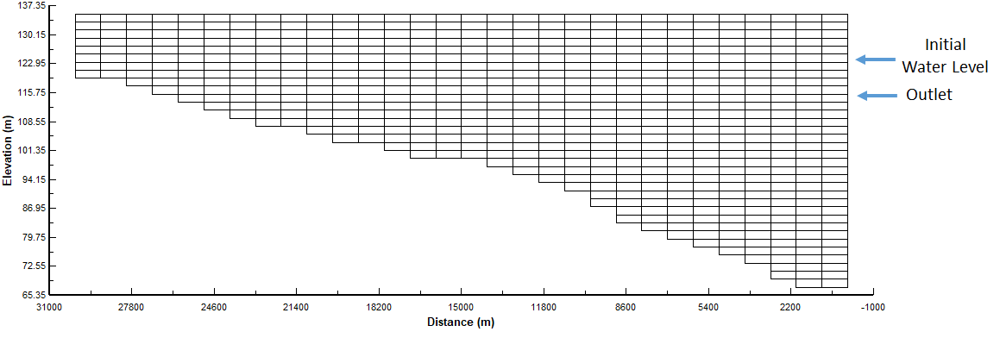
Key Features¶
This example demonstrates how to set up and use the fish habitat feature (output file habitat.csv) and the environmental performance features. Output files include envrprf_t_1.csv for temperature and envrprf_c_1.csv for concentration of state variables, used to evaluate a model simulation. These are configured using the input files w2_habitat.npt and w2_envirprf.npt. Descriptions of these files are provided in the User Manual Part 3.
Output files are also written for the W2Post post-processor and for contour plotting of depth vs. time and temperature (input file w2_lake_river_contour.csv).
The control file for this example is generated from the Excel file w2_con_DeGray.xlsm, which produces the file w2_con.csv.
This example also has sediment diagenesis enabled (input file w2_diagenesis.npt) and vertical migration of algae enabled (input file w2_AlgaeMigration.csv). See the User Manual Part 3 for details on these features. All auxiliary input files are tabs in the Excel file w2_con_DeGray.xlsm.
Detroit Lake¶
Waterbody Description¶
This example explores model execution, fish habitat analysis, and travel time of particles released at the upper end of the reservoir. The model represents Detroit Reservoir in Oregon, USA. The original model was developed by the USGS (Sullivan et al., 2007) and has been simplified for this example.
Model Grid¶
The model has 4 branches and 31 segments. The vertical layer height is approximately 2 m. The model files are organized in a zipped file with input files in a subdirectory called InputFiles. All output files are written to the directory where the model executables are located, although output can be directed to a separate directory using guidelines in the User Manual.
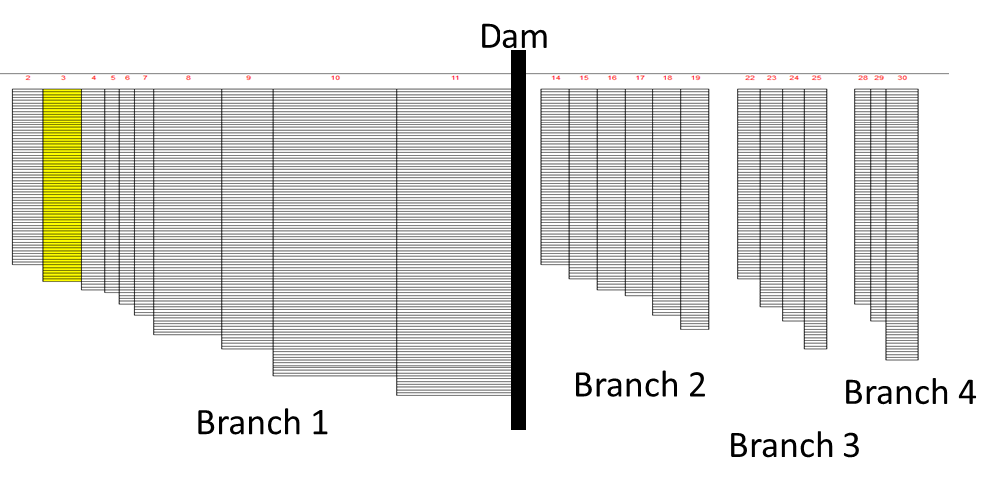
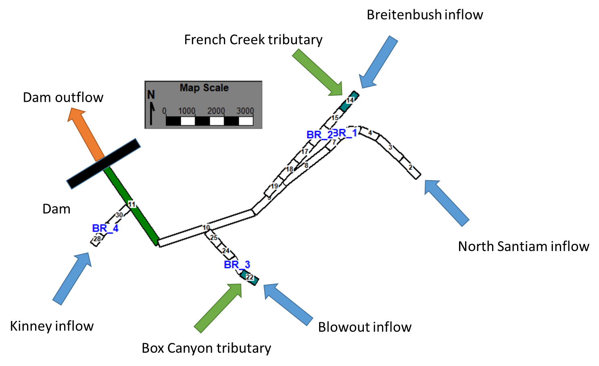
Model Predictions¶
After running the preprocessor and model executable, two aspects of the model predictions are highlighted:
- Flow balance summary
- Fish habitat volume
Flow Balance Summary¶
The output file for overall flow balance is flowbal.csv. This file reports the flow in and out as well as evaporation losses over the 2002 simulation year. The file contains model-predicted evaporation losses, mass balance errors (very small), and inflow and outflow volumes.
Fish Habitat Volume¶
The output file for fish habitat volumes is habitat.csv. This file reports habitat volumes and percent volumes for each species listed at the beginning of the file. The file opens in Excel, and the model-predicted fish habitat for striped bass can be viewed as a percentage of the reservoir volume over the year (Figure 12). This reservoir is too cold in the winter months for this species.
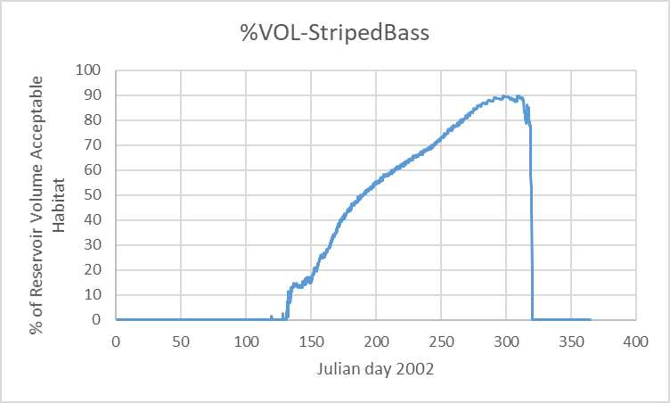
Additional model features to explore include suspended solids distributions in the reservoir and stratification dynamics. The W2Post graphical user interface (GUI) post-processor provides contour plots of temperature stratification, time series plots, and profile plots.
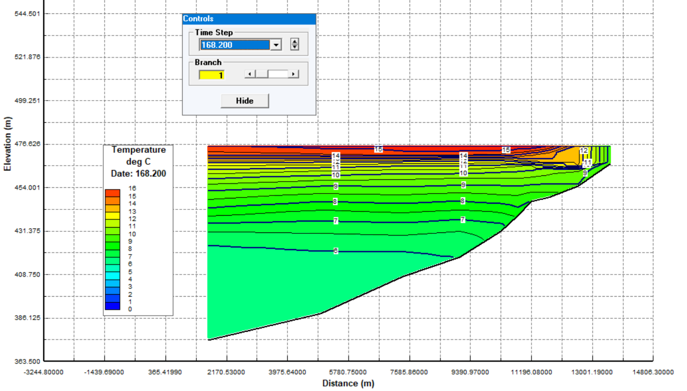
Long Lake (Spokane Lake)¶
Waterbody Description¶
This example was provided to test the new Excel-based control file, w2_con.xlsm, which writes out a CSV file named w2_con.csv that is used in lieu of the files w2_con.npt and graph.npt. This is described in User Manual Part 3.
Long Lake is part of the Spokane River that flows from Idaho to the Columbia River. Characteristics of the lake are described below. Figure 14 shows the location of the Upper Spokane River system. Figure 15 shows a close-up of the Spokane River from the WA-ID State line to the Long Lake Dam.
Long Lake is located furthest downstream in the system model. Table 5 provides some important physical characteristics of the reservoir.
Long Lake Bathymetry¶
The Long Lake bathymetry was originally developed by the WA Department of Ecology and was based on bathymetric contour maps provided by AVISTA Corporation. Figure 16 shows an image of the reservoir contours used to develop the lake bathymetry.
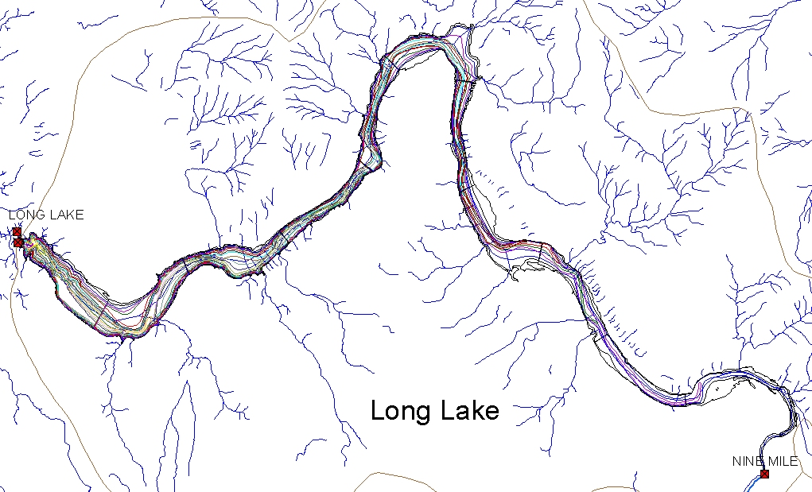
Long Lake Dam and Reservoir¶
The dam facilities are located at RM 32.5, and the lake backs up to one mile below Nine Mile Dam at RM 57.8. The Long Lake section of the model includes from Nine Mile Dam to Long Lake Dam. Depending on water level, the uppermost segments of the model may act like a river or lake.
The lake has a maximum depth of 170 ft at a full pool elevation of 1536 ft NGVD29. Figure 17 shows the Long Lake Dam, spillway, and powerhouse facilities. There are 8 Tainter gates on the dam. Aside from leakage, these gates are kept closed to allow as much storage (normal pool is with gates closed) and power generation as possible. Table 5 lists several dam facility specifications.
Table 5. Long Lake Dam and Reservoir specifications.
| Specification | ft | m |
|---|---|---|
| Top of Dam Elevation | 1537 | 468.48 |
| Spillway Crest Elevation | 1508 | 459.64 |
| Spillway Gate Type | Vertical lift (8) | |
| Spillway Gate Height | 29 | 8.84 |
| Spillway Gate Width | 25 | 7.62 |
| Normal Full Pool Elevation | 1536 | 468.18 |
| Max Forebay Elevation | 1536 | 468.18 |
| Min Forebay Elevation | 1512 | 460.86 |
| Max Drawdown | 24 | 7.32 |
| Turbine Inlet Elevation | 1499 | 456.9 |
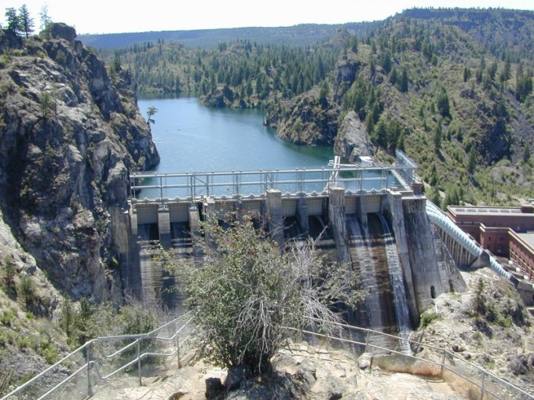
Model Grid¶
Long Lake was modeled as a one-branch system. Figure 18 shows a cross section of the model grid for Long Lake, and Figure 19 shows a plan view of the model grid indicating the segment orientation. Details of the grid setup are given in Table 6.
Table 6. Computational grid setup for Long Lake.
| Branch | Start RM | End RM | Layer height (m) | # of segments | DLX range (m) |
Bottom elev. (m) |
|---|---|---|---|---|---|---|
| 1 | 57.77 | 32.50 | 1.0 | 37 | 1070.8--1666.0 | 422.10 |
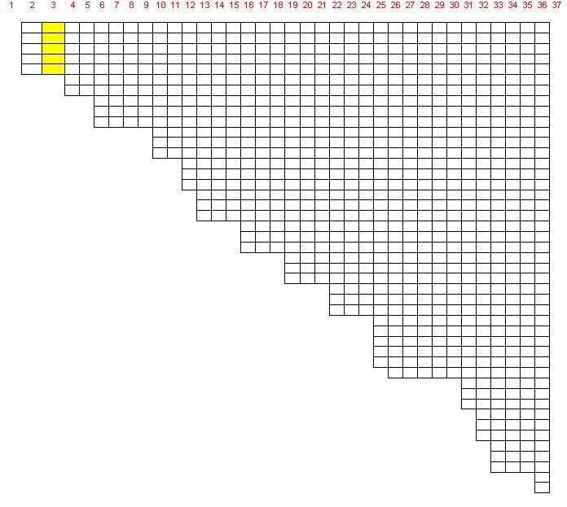
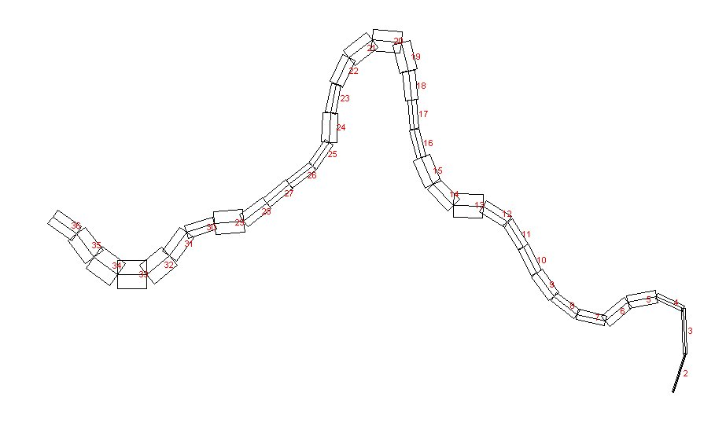
Initial and Boundary Conditions¶
Inflows to Long Lake consist of the upstream boundary condition from the Spokane River and a tributary inflow from the Little Spokane River. Figure 20 and Figure 21 show the upstream inflow and temperature to Long Lake. Figure 22 and Figure 23 show the inflow and temperature from the Little Spokane River. Figure 24 shows the outflow from Long Lake.
Input and Output Files¶
Table 7 shows the file names of the inputs to the Long Lake model and the output files generated by the model.
Table 7. Long Lake model input and output files.
| File type | File name | Description |
|---|---|---|
| Control file | w2_con.csv |
Model control file (developed from w2_con.xlsm) |
| Bathymetry file | bth.csv |
Segment lengths, initial water surface elevation, segment orientation, layer thickness, and cell widths |
| Meteorological file | met00jr6.csv |
Time series file containing temperature, dew point temperature, wind speed, wind direction, and cloud cover data (based on solar radiation) |
| Wind sheltering file | wsc.csv |
Wind sheltering coefficient for each segment and variable over time |
| Shade file | shade.csv |
Shade file for characterizing vegetative and topographic shade or static shade values |
| Aerator input file | w2_aerate.npt |
Input parameters for using aeration |
| Environmental performance criteria input file | w2_envirprf.npt |
Input parameters for specifying environmental performance criteria |
| Habitat volume input file | w2_habitat.npt |
Input parameters for calculating habitat volumes |
| Selective withdrawal input file | w2_selective.npt |
Input parameters for selective withdrawal feature |
| Water surface elevation file | wl_LL00.dat |
Observed water surface elevations |
| Branch inflow files | Qin_br1.csv |
Flow rate file for branch 1 inflow |
Tin_br1.csv |
Temperature file for branch 1 inflow | |
Cin_br1.csv |
Concentration file for branch 1 inflow | |
| Branch outflow files | qll_00.csv |
Flow rate file for branch 1 outflow |
| Tributary files | LSPKQ00.csv |
Flow rate file for tributary 1 (Little Spokane River) |
LSPKT00.csv |
Temperature file for tributary 1 | |
LSPKC00.csv |
Concentration file for tributary 1 | |
| Distributed tributary files | Qwb1.csv |
Flow rate file for distributed tributary |
DisTribT.csv |
Temperature file for distributed tributary | |
DisTribC.csv |
Concentration file for distributed tributary | |
| Model output files | snp1.opt |
Snapshot file |
tsr_#_seg#.csv |
Time series files | |
qwo_36.csv |
Long Lake outflow file for segment 36 (dam segment) | |
two_36.csv |
Long Lake outflow temperature for segment 36 (dam segment) | |
cwo_36.csv |
Long Lake outflow concentration for segment 36 (dam segment) | |
qwo_str1_seg36.csv |
Outflow file time series for structure #1 at segment 36 (dam segment) | |
two_str1_seg36.csv |
Outflow temperature time series for structure #1 located at segment 36 (dam segment) | |
cwo_str1_seg36.csv |
Outflow constituent time series for structure #1 located at segment 36 (dam segment) | |
W2_Output.w2l |
Binary output file for W2_Tool Post-Processor |
Multiple Water Body Cascade¶
Overview¶
This example focuses on using 3 waterbodies of a river system that cascade from one to the other in linear fashion with the multiple processor approach. This approach is discussed in Part 3 of the User Manual. The purpose of this example is to show how to reduce computational time for running multiple waterbodies.
The user has several choices for running this system of 3 waterbodies:
- Run all 3 waterbodies as one model. This approach is simpler to manage since all files are in one directory, but the model takes the longest time to run since all waterbodies are limited to the shortest numerical time step in the 3-waterbody domain.
- Run waterbodies sequentially. Run the upper waterbody (WB1) first, then copy the outflow from WB1 to the next waterbody (WB2) and run WB2. Repeat for the last waterbody (WB3). This approach is well-suited to using a batch file to transfer files automatically and setting
CLOSECtoONto close the dialog box automatically. Each waterbody will run at its maximum time step independent of the other waterbodies and hence will be faster than the first choice. - Use the multiple waterbody model. The code manages the transfer of information from one waterbody to the other and runs the models simultaneously based on upstream data availability. Instead of waiting for the upstream run to complete, the downstream model starts running when information is available from upstream. With multiple cores, the waterbodies run on separate computer cores and the run finishes close to the time of the limiting waterbody.
Waterbody Description¶
The example is from a multiple waterbody model of the Chehalis River in Washington, USA. The Chehalis River Basin is located in southwest Washington State (see Figure 25). The drainage area to the Chehalis River is over 2,000 square miles, with area existing within five counties: Lewis, Thurston, Grays Harbor, Pacific, and Cowlitz (WADOE, 2001).
The Chehalis River originates in Coast Range east of Willapa Bay, and also drains the western foothills of the Cascades and the southern Olympic Mountains. It ultimately flows into Grays Harbor and the Pacific Ocean, totaling over 125 miles in length.
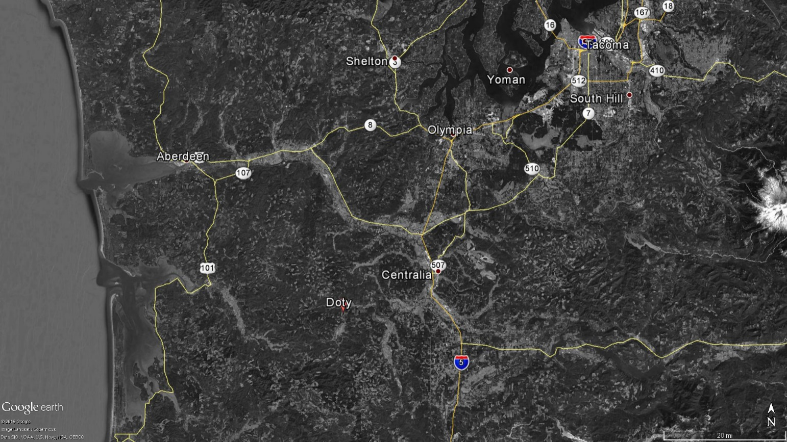
Model Grid¶
The Chehalis River was modeled from upstream of Pe Ell (RM 108) to Porter, WA (RM 33.3). Only the mainstem Chehalis River was modeled and was discretized into 10 model branches and 9 waterbodies. The physical characteristics of the river varied widely, and multiple branches allowed for separate characteristics (such as branch slope) unique to each branch to be implemented in the model. The upstream reaches had steep gradients with riffles and pools. It is the first 3 waterbodies or first 3 branches that were used in this example (see Figure 26). Table 8 shows the characteristics of each waterbody.
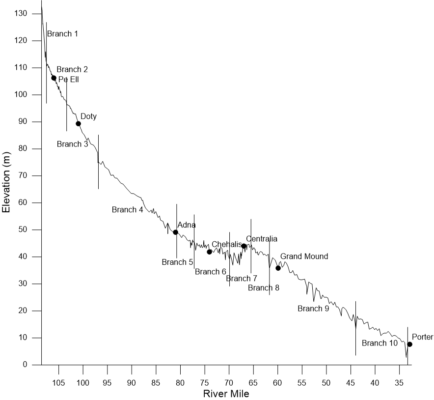
Table 8. Summary of waterbody and branch segments and layers for the 3 waterbodies in this example.
| Waterbody | Branch | Starting active segment | Ending active segment | Number of segments | Branch length (m) | Number of layers | Vertical layer thickness (m) | SLOPE |
|---|---|---|---|---|---|---|---|---|
| 1 | 1 | 2 | 6 | 5 | 2000 | 20 | 1 | 0.01600 |
| 2 | 2 | 2 | 21 | 20 | 8000 | 20 | 1 | 0.00200 |
| 3 | 3 | 2 | 30 | 29 | 11600 | 20 | 1 | 0.00200 |
Running the Example¶
For this example, follow the steps outlined in User Manual Part 3 for using this model feature. The model user starts running the first waterbody, then starts running the second waterbody, then once output has started in the second waterbody, the model user starts the third waterbody. The model waits until enough output has been generated by the upstream model before starting on the downstream models.
Each model waterbody runs on a different model processor. Overall this approach has saved considerable computational time compared to running the model all under one model environment.
Particle Tracking¶
Overview¶
This example is for a reservoir that has a particle release defined by the input file, particle.csv. The User Manual Part 3 describes in detail the input file format and the model output files that describe the particle paths and histogram of the time history of the particles in terms of temperature, velocity, and depth the particles experienced over time.
This code also shows how to use the feature where the longitudinal eddy viscosity and diffusivity scale with the predicted longitudinal velocity, which affects the random movement of particles in the x-direction.
Model Grid¶
The reservoir grid with one waterbody and 6 branches is shown in Figure 27. The side view of branch 1 is shown in Figure 28. The dam is located at the end of branch 1 at segment 64. A primary withdrawal is at segment 84 in branch 2. Hence, many of the particles released near the dam travel upstream into branch 2 to the withdrawal at segment 84.
Results¶
A typical example of using Tecplot to plot the particle paths is shown in Figure 29.
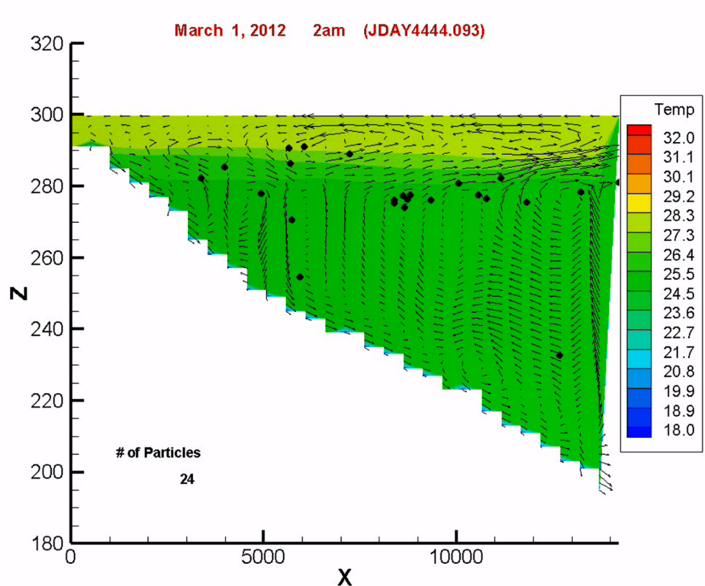
Sediment Diagenesis Example¶
Model Grid¶
The sediment diagenesis model example plan view of the grid is shown in Figure 30. Figure 31 shows the side view of the main branch 1. The grid consists of 270 segments, 1 waterbody, 7 branches, and 43 layers of 1 m vertical grid spacing.
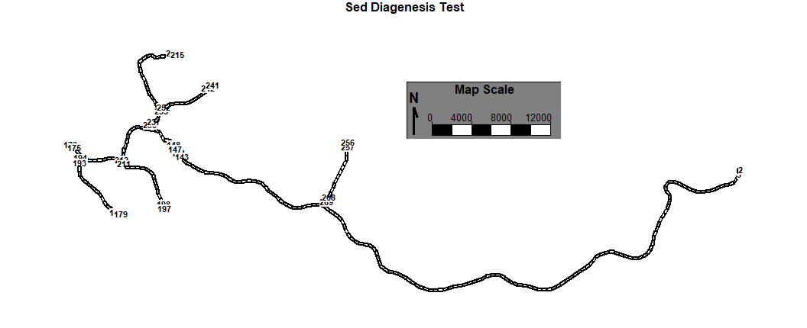
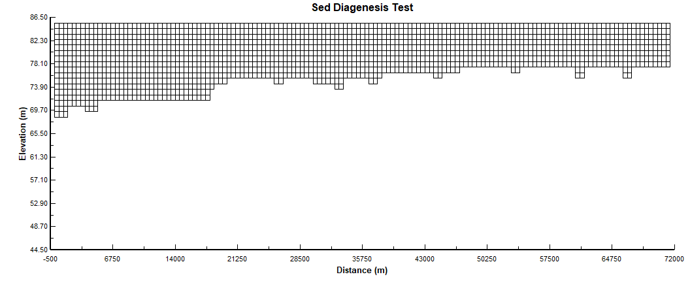
Key Input and Output Files¶
The file for setting up the sediment diagenesis example is w2_diagenesis.npt, which is described in detail in User Manual Part 3. Once a simulation is performed, a set of files (also described in User Manual Part 3) are output by the model to evaluate the sediment diagenesis model. Some of these output files are shown in Figure 32.
Typical output files include:
Diagenesis_CH4_Sediments.csvDiagenesis_H2S_Sediments.csvDiagenesis_POC_Sediments.csvDiagenesis_PON_Sediments.csvDiagenesis_POP_Sediments.csvDiagenesisAerobicLayer.csvDiagenesisBottomLayer.csvDiageneisisBubbleReleaseSummary.csvDiageneisisBubbles.csvDiageneisisBubblesAtmosphereRelease.csvDiagenesisConstituent.csvDiageneisisSedDissGasOutput.csvDiageneisisSedimentGasOutput.csvDiagenesisSOD.csvDiagenesisSODCSODNSOD.csv
Spokane River¶
Waterbody Description¶
This example shows how to use a river model and to explore the periphyton and river shading in the CE-QUAL-W2 model. The first example uses old input file formats, while the other example has CSV format inputs.
The Spokane River reach between Upper Falls Dam (RM 74.1) and Nine Mile Pool (RM 62.0) is simulated in this example (Figure 33). The Spokane wastewater treatment plant (WWTP) is located at RM 67.4 (segment 27), and Hangman Creek is located at RM 72.4 (segment 11).
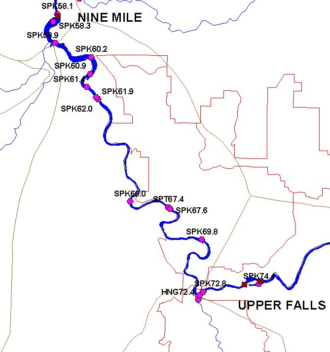
Model Grid¶
The segments are oriented as shown in Figure 34. The side view of the grid is shown in Figure 35.
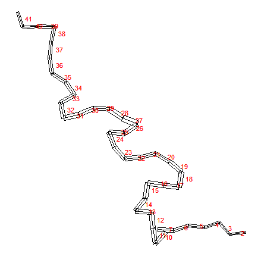
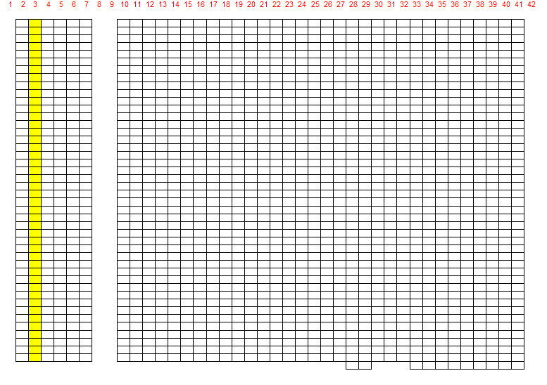
Tributary inputs are located at segments 11 and 27 representing a tributary Hangman Creek and the Spokane WWTP, respectively. A listing of model files and their description is shown in Table 9.
Input and Output Files¶
Table 9. Model files for the Spokane River example.
| File type | File name | Description |
|---|---|---|
| Control file | w2_con.csv from the Excel file w2_con_SpokaneRiver.xlsm |
Model control file |
| Bathymetry file | bth1.csv |
Segment lengths, initial water surface elevation, segment orientation, layer thickness, and cell widths |
| Meteorological file | met.csv |
Time series file containing temperature, dew point temperature, wind speed, wind direction, and cloud cover data (based on solar radiation) |
| Wind sheltering file | wsc.csv |
Wind sheltering coefficient for each segment and variable over time |
| Shade file | shade.csv |
Shade file for characterizing vegetative and topographic shade or static shade values |
| Aerator input file | w2_aerate.npt |
Input parameters for using aerator feature |
| Environmental performance criteria input file | w2_envirprf.npt |
Input parameters for specifying environmental performance criteria |
| Habitat volume input file | w2_habitat.npt |
Input parameters for calculating habitat volumes |
| Selective withdrawal input file | w2_selective.npt |
Input parameters for selective withdrawal feature |
| Branch inflow files | qin_br8.npt |
Flow rate file for branch 1 inflow |
tin_br8.csv |
Temperature file for branch 1 inflow | |
cin.csv |
Concentration file for branch 1 inflow | |
| Tributary files | Hangq01.npt |
Flow rate file for tributary 1 (Hangman Creek) |
SPKwwtpq01.npt |
Flow rate file for tributary 2 (Spokane WWTP) | |
hangT01.npt |
Temperature file for tributary 1 | |
SPKwwtpt01.npt |
Temperature file for tributary 2 | |
hangmanc.csv |
Concentration file for tributary 1 | |
spokanewwtpc.csv |
Concentration file for tributary 2 | |
| Distributed tributary files | qdt_br8.npt |
Flow rate file for distributed tributary 1 |
tdt_br9.npt |
Flow rate file for distributed tributary 2 | |
tdt_br8.npt |
Temperature file for distributed tributary 1 | |
tdt_br9.npt |
Temperature file for distributed tributary 2 | |
cdt8.csv |
Concentration file for distributed tributary 1 | |
cdt9.csv |
Concentration file for distributed tributary 2 | |
| Model output files | snp1.opt |
Snapshot file |
tsr_1_seg2.csv to tsr_7_seg41.csv |
Time series files | |
qwo, two, cwo files |
Withdrawal output files at segments 10 and 41 | |
Spokane.w2l |
Binary output file for W2_Tool Post-Processor |
SysTDG Columbia River - Bonneville Reservoir¶
Overview¶
This is an application on the Columbia River using the SYSTDG model for estimating the discharge total dissolved gas (TDG) at Bonneville Dam. The model consists of 1 waterbody, 1 branch, and 77 model segments as shown in Figure 36. The main branch 1 of the Columbia River side view is shown in Figure 37.
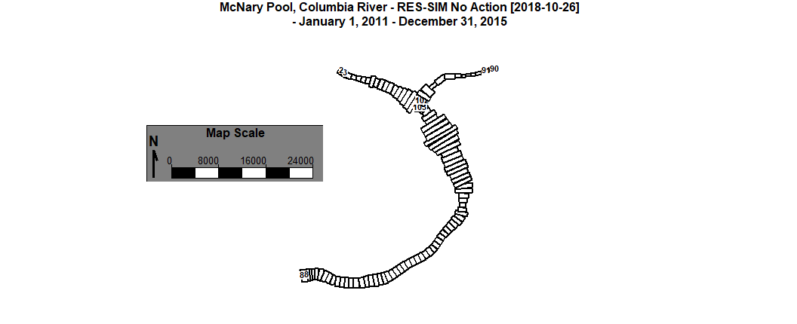
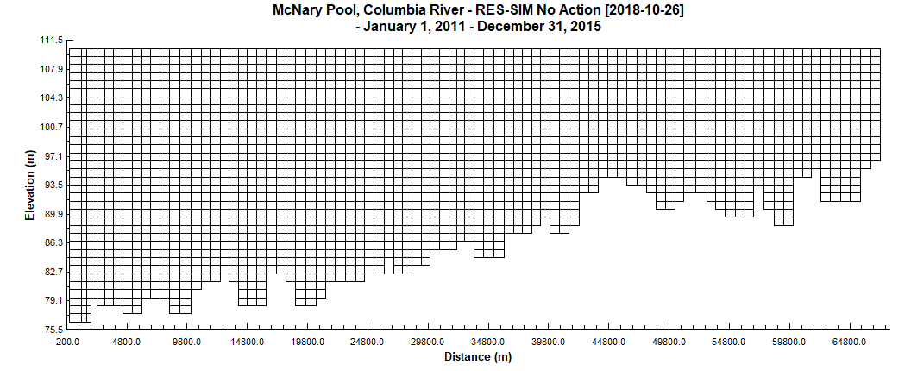
Key Features¶
This example illustrates how to turn on TDG and use the state variables N₂ gas and O₂ gas to predict TDG gas concentrations in the pool area and at the dam as a result of spillway operation. The special input file, w2_systdg.npt, is described in User Manual Part 3.
The SysTDG algorithm only operates on gates. Hence, gates were used for the spillways and powerhouse withdrawals since specified flows can be prescribed for a gate just as a withdrawal or structure.